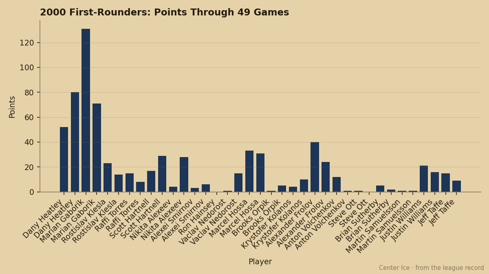

PHX
PHXThe Last First-Rounder From 2000 Has 84 Hands, a 50 Check, and 7.4 Minutes
Jeff Taffe carries the highest potential grade of any skater from the 2000 first round. Phoenix has him at 7.4 minutes a night on a 20-24-4 team.
 Pete LarocqueScouting editor · The Prospect File
Pete LarocqueScouting editor · The Prospect File
 Jeff Taffe75 [960] was the 30th man drafted in the 2000 first round. He carries a potential grade of 98, the highest of any skater from that class still in the league.
Jeff Taffe75 [960] was the 30th man drafted in the 2000 first round. He carries a potential grade of 98, the highest of any skater from that class still in the league.  Rick DiPietro84 [229] has 99, but he is a goaltender and he plays 55.9 minutes a night for
Rick DiPietro84 [229] has 99, but he is a goaltender and he plays 55.9 minutes a night for  New York Islanders. Taffe plays 7.4.
New York Islanders. Taffe plays 7.4.
The Book has him at 75 overall, at his base, with the Development Index showing no movement either way. He is 23 years old. His contract has 0 years left on it at $0.40M. The summer will decide whether Phoenix keeps him.
The grades that make the case
Taffe's offensive attributes sit in the top tier of his class. ACCU 84. PUCK 84. SHPW 83. Those grades say he should be making plays in the offensive zone. Instead he's killing fourth-line minutes on a club with 46 points and a 5th-place Pacific finish.
His body grades explain why he doesn't. FACE 50. FIGH 50. TOUG 51. He won't win the puck off the wall or hold a defender off it, and he won't clear the crease. The Book's per-attribute grades put him in the bottom tier on every physical measure and near the top on every skill measure, and the coach who has to dress three centers already has  Mike Sillinger88 [909] at 88,
Mike Sillinger88 [909] at 88,  Shane Doan86 [231] at 84, and
Shane Doan86 [231] at 84, and  Krystofer Kolanos72 [499] at 72.
Krystofer Kolanos72 [499] at 72.

That chart plots career points for the 2000 first-rounders still in the league across both seasons on the sheet.  Marian Gaborik98 [308] carries 131 points in 82 games and 71 in 50.
Marian Gaborik98 [308] carries 131 points in 82 games and 71 in 50.  Dany Heatley88 [377] carries 80 in 45 this season alone. Taffe has 15 points in 69 games last season and 9 in 49 this season. That's the 2000 draft's back end.
Dany Heatley88 [377] carries 80 in 45 this season alone. Taffe has 15 points in 69 games last season and 9 in 49 this season. That's the 2000 draft's back end.
What the background sheet says
Taffe played three seasons at the University of Minnesota before Phoenix traded for his rights in a deal involving Keith Tkachuk. He debuted professionally with Springfield in 2002-03. His 2003-04 line reads 69 games, 7 goals, 8 assists, 15 points, 2 penalty minutes, 8.2 minutes a night.
This season: 49 games, 7 goals, 2 assists, 9 points, 0 penalty minutes, 7.4 minutes a night. The goal total is the same. The assists dropped from 8 to 2. The minutes dropped from 8.2 to 7.4.
One other entry on the record: on November 28, 2004, Taffe elbowed Josh Harding74 [1191] in the back of the neck during an incident with Houston in the AHL. Harding carries a 79 overall now at  Washington Capitals and sits 5 above his base on the Index. The elbow didn't cost him those minutes. But it's part of why a 23-year-old center with 84 hands can't get a look.
Washington Capitals and sits 5 above his base on the Index. The elbow didn't cost him those minutes. But it's part of why a 23-year-old center with 84 hands can't get a look.
The market
Phoenix is 20-24-4, 46 points, 5th in the Pacific. They're stuck in the middle, a team with Sillinger, Burke, Nagy, Doan, and a middle six that can't score enough to separate them from the bottom two. Taffe is on the fourth line at 7.4 minutes because the top of the depth chart is full.
His deal expires. At $0.40M he is the cheapest center on the roster. The question for June is whether a team with a top-six hole looks at ACCU 84 and SHPW 83 and decides the hands are worth the minutes, or whether FACE 50 and TOUG 51 mean he is a fourth-line player at every level of this league regardless of what the potential grade says.
The Junior Bureau put 98 next to his name. The Bureau does not put 98 next to many names. It put 98 next to a man who will be 24 in February, has never played more than 8.2 minutes a night, and has 9 points in 49 games.
I have Taffe on the board above four of the 2000 first-rounders whose current overall grades are higher than his. Hands are hard to teach. A body like that at 23 isn't getting better.